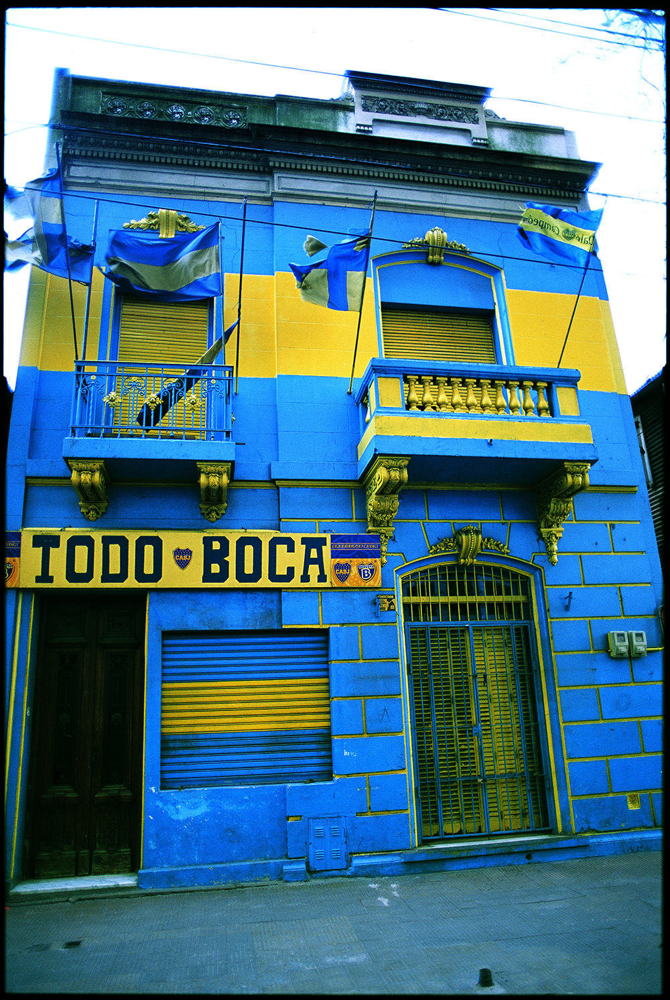
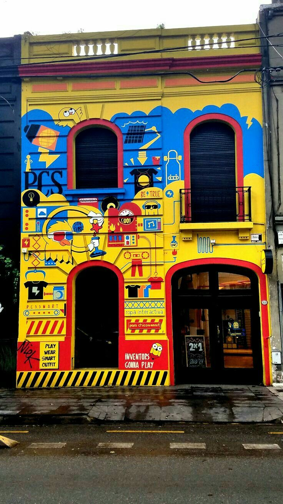
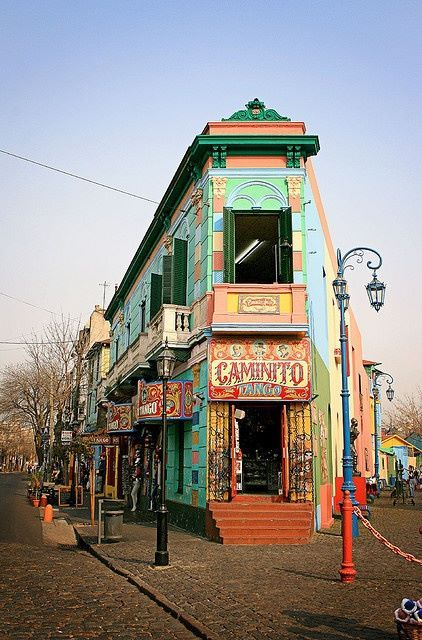

La Boca

Most of Buenos Aires is very beautiful in the standard, old-school European way, with some Latin American flair for good measure: old town squares, beautiful architecture, modern high-rise skyscrapers. But to experience the city at its most unique, you need to head to La Boca, the outrageously colorful neighborhood that’s part Instagram-worthy tourist attraction, part memorial to the city’s working-class history.
 More intriguing information
La Boca (“mouth” in Spanish) was once quite literally the mouth of Buenos Aires. It’s located on what used to be the city’s biggest port, where products, goods, and immigrants arrived by the shipload in the late 19th and early 20th centuries. Those immigrants set up shop in the surrounding vicinity, working the docks and building homes from the scrap material leftover from ship-building. You’ll see this in the haphazard shanty houses that still line the streets here, made from sheet metal and wooden planks; in addition, nearly all of them are painted in very bright colors.
The houses weren’t always quite so bright. It wasn’t until the 1960s, when local artist Benito Quinquela Martín decided to use his neighborhood as a canvas, painting one abandoned street that quickly became a meeting place for other La Boca artists. The rest of the neighborhood followed suit, and a homegrown tourist attraction was born.
Nearby streets Garibaldi and Magallanes have also become an offshoot of Caminito, and street art in the form of political and comedic graffiti can be found throughout the area. Photo ops abound, especially if you can navigate your way around the crowds (the neighborhood is least crowded on weekday mornings). You might be able to find more reasonably priced souvenirs in other parts of town of better artistic quality, but the stalls along Caminito are chock full of artwork, photography, and ceramics, all by local artists.


Added to the beautiful and colorful streets of "Caminito" and La Boca, we find the clubs stadium. Stadium Alberto J. Armando, better known as "La Bombonera" by it's peculiar chocolate box shape.